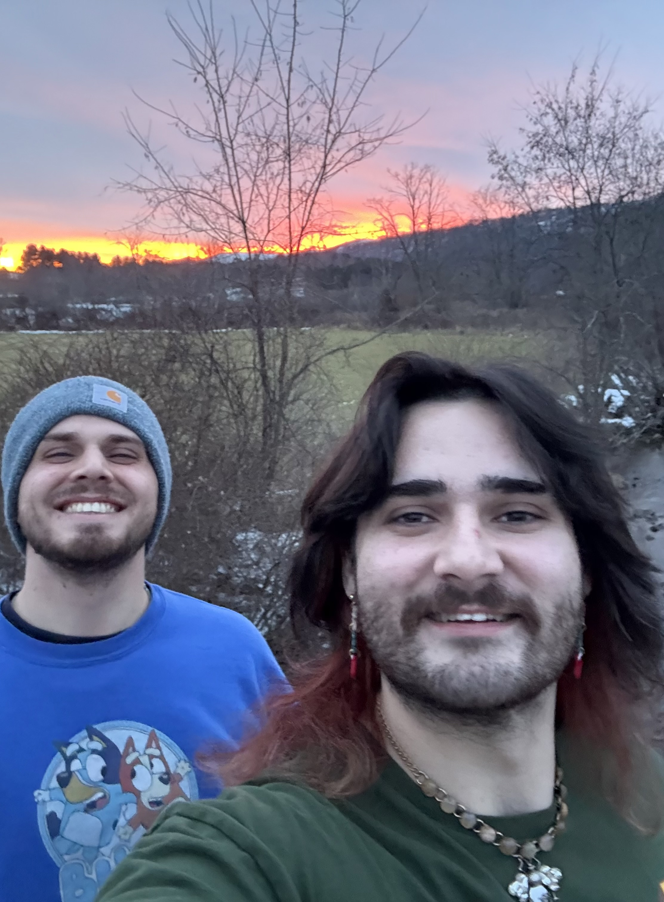
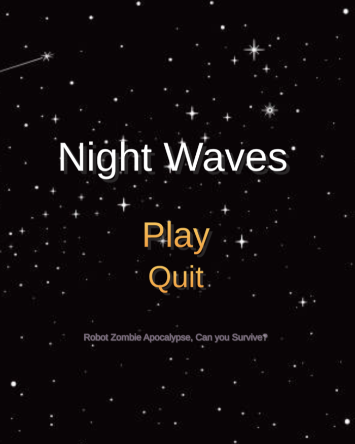
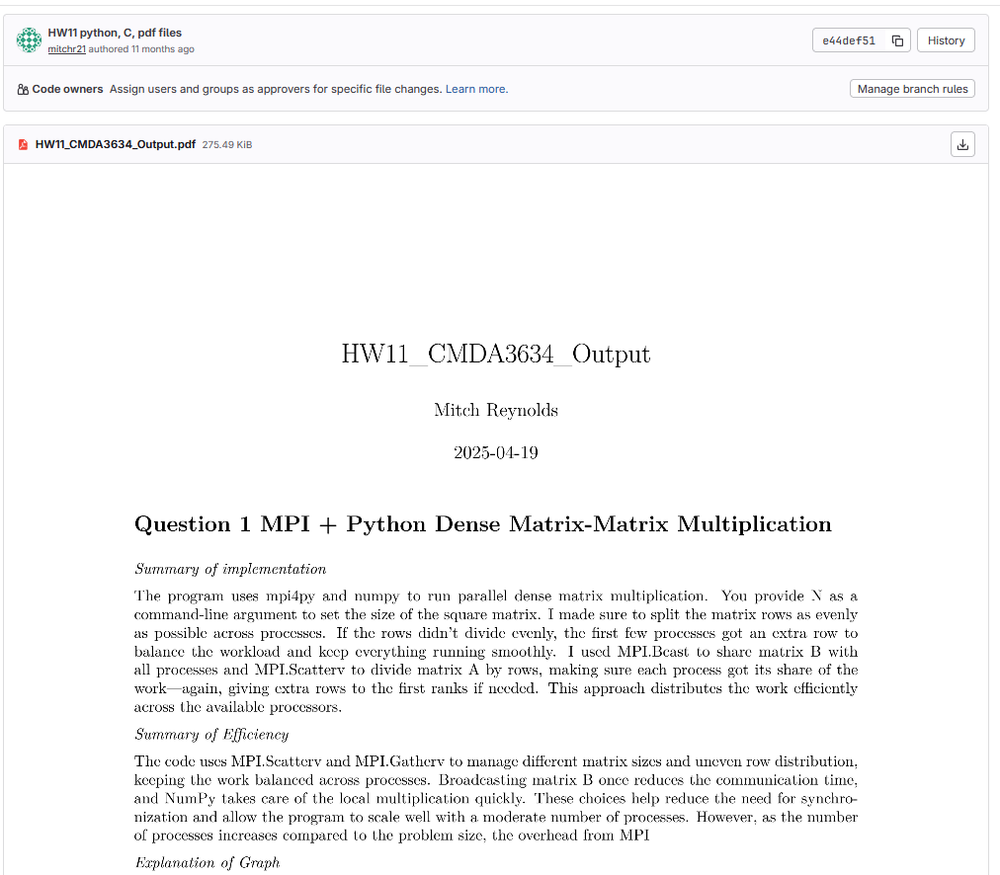
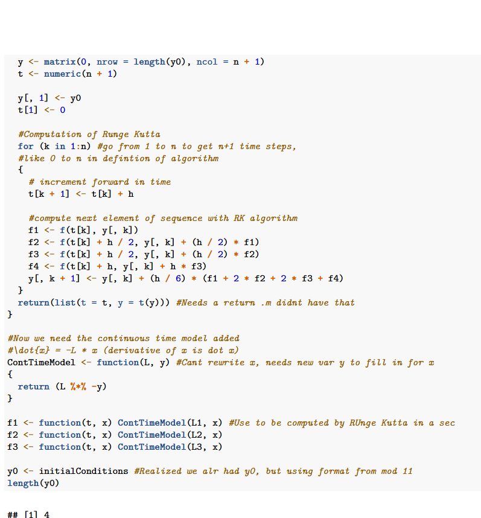

Data Scientist / Model Analyst
Bachelor of Science in Data Science

Hi, I'm currently a student at University of Phoenix finishing my bachelor's in Science of Data Science, with a minor in CS and Mathematics. I created this website to showcase my current projects, and what keeps me interested while I enter the job market. I will show off my projects focused primarily on data science but also software development and game development. With these projects and this website I honed my skills working with project based development, Git and Github, HTML/JS/CSS, and for data science I will be showcasing my research on statistical modeling, my work on VT's supercomputer TinkerCliffs (ARC), Nonlinear Dynamics and Chaos, and optimization work using parallel programming and C. This serves as a tool to help me pool my knowledge into one accessable place for both me and potential employers. Thank you for checking out my website, and please send me a message at the bottom of this website, if you have any recommendations thank you so much!
Skills
Experience
Education
Confident in Data Filtering, Modeling, and Analysis. With formal research database design experience in SQL and mySQL, as well as Microsoft SQL Server. Willing to work in R, Python, C, Java, etc. and work on any level, from Computer Science to Modeling to utilize full problem solving abilities in the world of data analysis.
Able to handle multi-staged development, implement advanced algorithms and data models, follow project based learning in multiple languages; confident in python, java, C++, and familiar with C, C#, HTML, and JS. Also comfortable working with API's, git/Github, and familiar with Docker, AWS, and mySQL/microsoft azure
At VT I specialized my major in Computational Modeling and Data Analysis, which had a focus on parallel programming. For over 6 months I had the ability to work on distruted systems using CUDA, OpenMp, MPI, and physical connected machines over a network using VT's parallel programming classes. This included mainly working on VT TinkerCliffs which gave me access to thousands of cores and taught me the importance of protocol. Tools: C, Python, RStudio, CUDA, OpenMP vim/emacs, terminal, etc.


For 6 months I worked with different networks within parallel programming, such as OpenMP, CUDA, and MPI. Utilized this knowledge to fill a repository with 12 projects, including the listed photo, which focused on MPI and dense Matrix-Matrix Multiplication, which was tested first on Python, then ran on the 1000's of cores that is VT's supercomputer, TinkerCliffs.

Description: Final Paper for a class about data modeling, and analyzing large data in a system. This paper highlights my research over the semester, such as analyzing consensus and equilibrium for discrete or continuous time models. From looking at the algebra, to vizualing using models, to handling the data in MATLAB and R. Tools: R, RStudio, MATLAB, Markdown, etc.